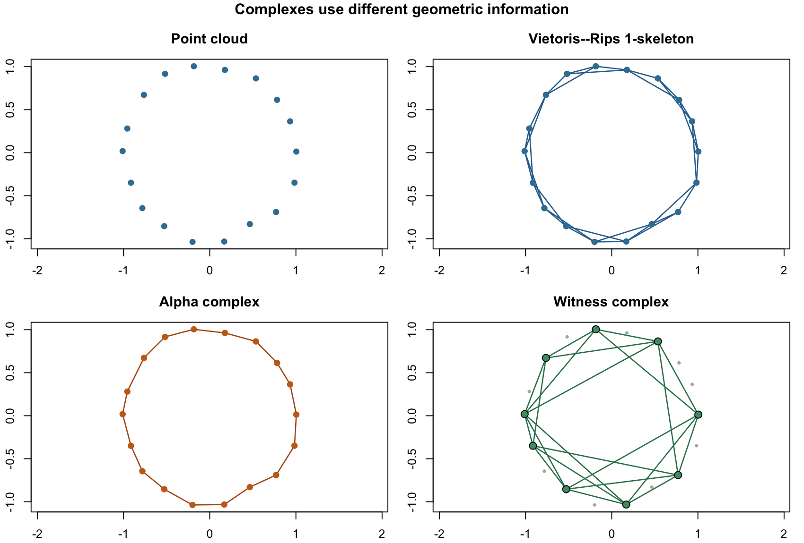
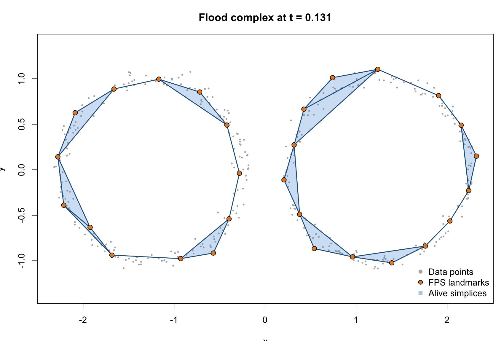
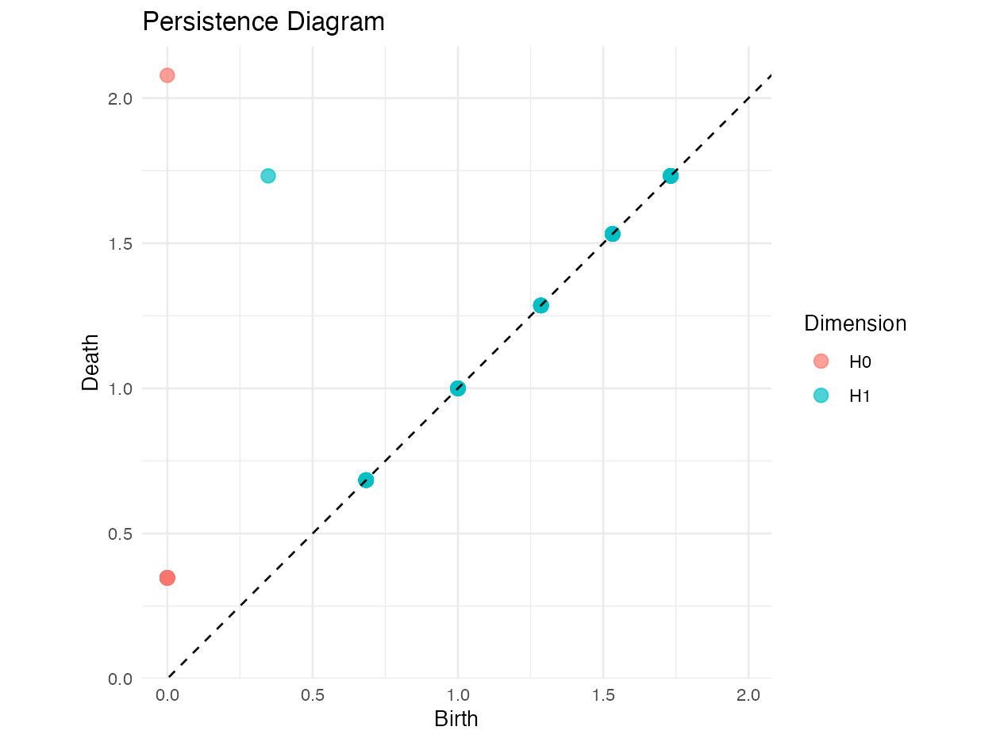
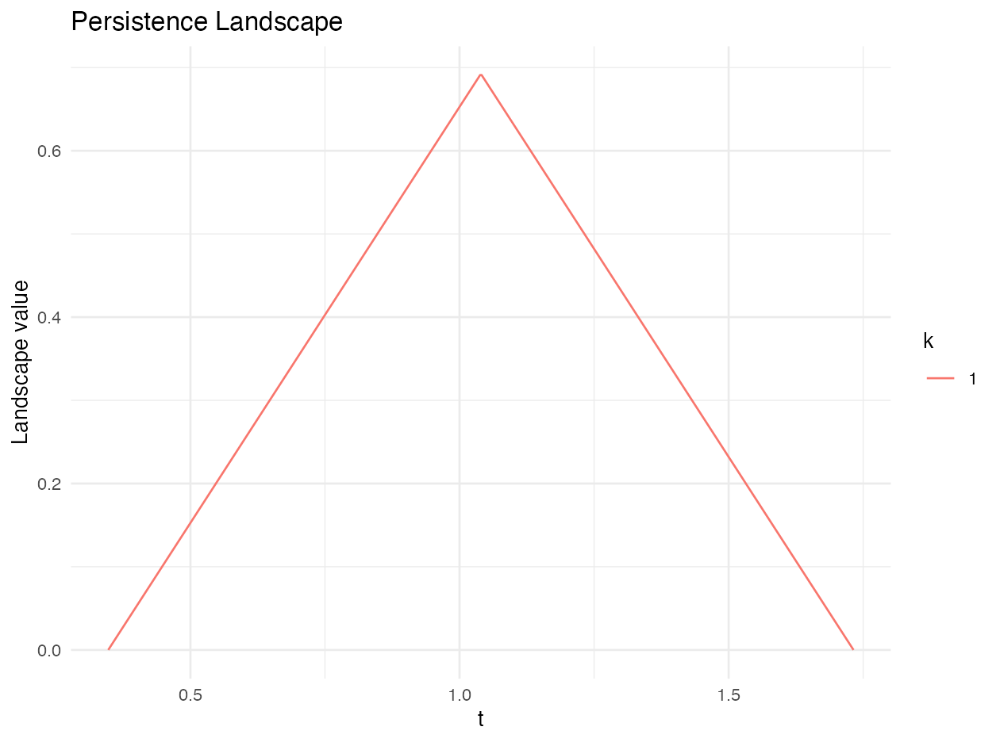
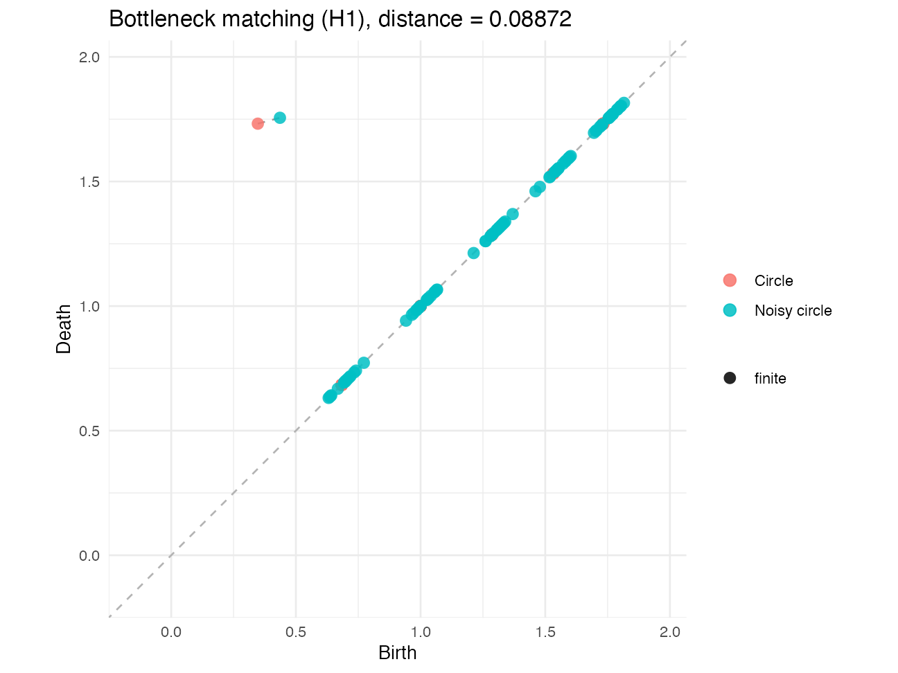

2 SimplicialComplex
The SimplicialComplex package represents shapes by vertices, edges, triangles, and their higher-dimensional analogues. It supplies three connected layers: construction of complexes and filtrations, algebraic and persistent-homology calculations, and comparison of persistence summaries. The same functions support both scripted analyses and the package’s Shiny explorer.
2.1 Installation and data representation
Use the installed package for analysis. During development, pkgload::load_all("../../SimplicialComplex") loads the local checkout when this document is run from Document/vignettes.
library(SimplicialComplex)
theta <- seq(0, 2 * pi, length.out = 25)[-25]
circle <- cbind(cos(theta), sin(theta))A complex is stored as a list of integer vertex-index vectors. For example, list(1L, 2L, c(1L, 2L)) contains two vertices and their edge. A filtration is a sorted list whose entries have the form list(simplex = <integer vector>, t = <numeric>); t is the entry time. This common filtration format is accepted by the persistence functions regardless of how the complex was constructed.
2.2 Faces, boundary matrices, Betti numbers, and Euler characteristic
faces() enumerates unique faces at a requested dimension. boundary() constructs the sparse boundary operator \(\partial_k\). betti_number() obtains \(\beta_k\) from numerical boundary-matrix ranks over the real numbers, and euler_characteristic() computes the alternating sum of face counts.
circle_complex <- list(
1L, 2L, 3L,
c(1L, 2L), c(2L, 3L), c(1L, 3L)
)
faces(circle_complex, target_dim = 1)
boundary(circle_complex, k = 1)
betti_number(circle_complex, k = 0)
betti_number(circle_complex, k = 1)
euler_characteristic(circle_complex)The tolerance argument used by the rank calculations is numerical rather than a filtration threshold. For persistent homology, the package instead reduces boundary columns over \(\mathbb{F}_2\).
2.3 Point-cloud complex constructions
build_filtration() provides one interface for Vietoris–Rips, Čech, Alpha, Delaunay, and Witness constructions. Flood and cubical filtrations have dedicated builders because their inputs and controls differ.
| Construction | Main function | Principal controls | Interpretation |
|---|---|---|---|
| Vietoris–Rips | VietorisRipsComplex() or build_filtration(method = "VR") |
epsilon or eps_max |
Adds an edge when two points are within the scale and fills every clique. |
| Čech | CechComplex() or build_filtration(method = "Cech") |
epsilon or eps_max |
Uses common intersections of equal-radius balls; exact minimum-enclosing-ball radii determine filtration times. |
| Alpha | AlphaComplex() or build_filtration(method = "Alpha") |
epsilon or optional eps_max |
Restricts Delaunay faces by their alpha values. |
| Delaunay | DelaunayComplex() or build_filtration(method = "Delaunay") |
point coordinates | Returns the uncapped Delaunay complex and its faces. |
| Witness | WitnessComplex() or build_filtration(method = "Witness") |
landmarks, epsilon/eps_max, nu |
Uses a smaller landmark set and lets all observations witness landmark relations. |
| Flood | flood_complex() or build_flood_filtration() |
landmarks, points_per_edge, batch_points, backend |
Uses Delaunay candidate simplices on landmarks and the full point cloud to assign flood times. |
| Cubical | build_cubical_filtration() |
image, superlevel |
Triangulates a two-dimensional grid and assigns lower-star values from the image. |
vr <- build_filtration(
circle, method = "VR", eps_max = 0.80, max_dimension = 1
)
cech <- build_filtration(
circle, method = "Cech", eps_max = 0.45, max_dimension = 1
)
alpha <- build_filtration(
circle, method = "Alpha", max_dimension = 1
)
delaunay <- build_filtration(
circle, method = "Delaunay", max_dimension = 1
)
witness <- build_filtration(
circle,
method = "Witness",
eps_max = 0.80,
landmarks = 10,
nu = 1,
max_dimension = 1
)When max_dimension = k is supplied, the builder retains simplices through dimension \(k+1\) internally. Those extra simplices are necessary to determine which \(k\)-dimensional classes die; only the requested dimensions are reported later.

2.3.1 Vietoris–Rips and Čech
Vietoris–Rips is combinatorial: pairwise distances create a graph and maximal cliques create higher-dimensional simplices. A simplex enters at its largest pairwise distance. Čech first uses the \(2\epsilon\) distance graph to generate candidates, then evaluates the minimum enclosing ball of each candidate. The latter more directly represents ball intersections but is usually more expensive.
2.3.2 Alpha and Delaunay
Delaunay triangulation limits the candidate faces geometrically. The Alpha complex retains only faces whose alpha values do not exceed the selected scale; Delaunay is the corresponding uncapped construction. These methods require the optional geometry dependency and coordinates in a configuration accepted by its triangulation routines.
2.3.3 Witness
The Witness complex reduces construction cost by choosing landmarks. landmarks may be either a count, which triggers farthest-point sampling through generate_landmarks(), or explicit row indices. nu controls the witness-distance relation, and epsilon/eps_max caps the admitted edges. Higher-dimensional simplices are filled from the resulting landmark graph.
2.3.4 Flood
flood_complex() chooses farthest-point-sampled landmarks when a count is supplied, constructs Delaunay candidate simplices on those landmarks, and probes each simplex with a barycentric grid. Nearest-neighbour distances from the grid to the complete point cloud define filtration values. batch_points bounds the number of grid coordinates processed together; backend = "cpu" uses RANN when available and otherwise a chunked base-R search, while backend = "torch" uses chunked tensor distance matrices.
set.seed(20260717)
theta <- runif(600, 0, 2 * pi)
noisy_circle <- cbind(cos(theta), sin(theta)) +
matrix(rnorm(1200, sd = 0.04), ncol = 2)
flood_filtration <- build_flood_filtration(
noisy_circle,
landmarks = 30,
max_dimension = 2,
points_per_edge = 10,
backend = "cpu",
batch_points = 65536
)
flood_pairs <- flood_persistence(flood_filtration, max_dimension = 1)
2.3.5 Cubical image filtrations
build_cubical_filtration() accepts a numeric matrix. Every grid cell is divided into two triangles and a simplex enters at the maximum value of its vertices, producing a lower-star filtration. With superlevel = TRUE, values are negated so that large original values enter first.
2.4 Persistent homology and persistence diagrams
persistence_pairs() performs sparse column reduction over \(\mathbb{F}_2\), representing a reduced column by sorted row indices instead of allocating a dense \(m\times m\) matrix. It returns dim, birth, and death; an infinite death denotes an essential class. flood_persistence() exposes the same sparse workflow for Flood filtrations.
pairs <- persistence_pairs(vr, max_dimension = 1)
pd <- plot_persistence(pairs)
ggplot2::ggsave(
"./man/figures/PersistenceDiagram.png",
pd,
width = 7,
height = 5,
dpi = 180
)
For smaller diagnostic calculations, boundary_info() builds and reduces the dense boundary matrix, and extract_persistence_pairs() converts its pivots into the same diagram format:
2.5 Persistence landscapes
persistence_landscape() converts finite birth–death pairs in one homological dimension into discretised landscape levels \(\lambda_k(t)\). Essential classes are reported and omitted because their death time is infinite. plot_landscape() returns the corresponding ggplot2 object.
landscape <- persistence_landscape(
cubical_pairs,
dimension = 0,
k_max = 5,
resolution = 500
)
landscape_plot <- plot_landscape(landscape)
ggplot2::ggsave(
"./man/figures/PersistenceLandscape.png",
landscape_plot,
width = 7,
height = 5,
dpi = 180
)
2.6 Diagram distances and optimal matching
wasserstein_distance() computes the exact assignment cost with the Hungarian algorithm; its defaults are order \(p=2\) and the Euclidean ground metric. bottleneck_distance() searches the exact smallest threshold that admits a perfect matching and defaults to the \(L_\infty\) ground metric. Both match ordinary points either to the other diagram or to the diagonal.
set.seed(7)
circle_b <- circle + matrix(rnorm(length(circle), sd = 0.03), ncol = 2)
pairs_b <- persistence_pairs(
build_filtration(circle_b, method = "VR", eps_max = 0.80,
max_dimension = 1),
max_dimension = 1
)
wasserstein_distance(pairs, pairs_b, dimension = 1, p = 2, ground = "L2")
bottleneck_distance(pairs, pairs_b, dimension = 1, ground = "Linf")
matching <- diagram_matching(
pairs,
pairs_b,
dimension = 1,
distance = "bottleneck",
ground = "Linf"
)
matching_plot <- plot_matching(
pairs,
pairs_b,
dimension = 1,
distance = "bottleneck",
ground = "Linf"
)
When essential classes are present, the current implementation replaces infinite coordinates by twice the largest finite coordinate found across the two selected diagrams. Distances involving essential classes should therefore be interpreted with that explicit finite cap in mind.
2.7 Comparing constructions and point clouds
compare_complexes() runs several construction methods on one point cloud and returns a timing/size summary together with the filtrations and diagrams. This separates the choice of complex from the choice of persistence summary. complex_distance() instead fixes one construction, builds diagrams for two point clouds, and returns their Wasserstein or bottleneck distance.
2.8 Interactive Shiny explorer
The app is titled Simplicial Complex Explorer. Its three input modes are Simplices (manual), Data points → VR simplices, and Data points → Flood complex. The result tabs are Faces, Boundary Matrix, Betti Numbers, Euler Characteristic, Abstract Simplicial Complex, Flood Complex Guide, and Persistence (Flood). The deployed playground is available at SimplicialComplex Shiny playground.
The remaining control labels in the current source are: Input Simplices; Points (each line: x,y); ε (VR edge threshold); Point cloud with Circle, Two circles, Annulus, and Custom (textarea); Number of witness points; Number of landmarks (FPS); Grid points per edge; Flood threshold t; Show flood balls (radius t); Target Dimension k; tolerance (for Betti & Euler); and Compute. The panel headings are Plot, Flood complex at threshold t, Faces Interpretation, Boundary Matrix \(\partial_k\), Betti Number \(\beta_k\), Euler Characteristic \(\chi\), Abstract Simplicial Complex, How the Flood Complex works, and Persistence Diagram. The Faces tab also displays the source sentence “simplicial complex outputs the faces of dimension \(k\)(points, edge,…)”.
The Flood guide illustration itself is labelled 1. Point cloud + FPS landmarks, grey = data points (flood sources), orange = landmarks, 2. Delaunay on landmarks, vertex = 0-simplex, edge = 1-simplex, triangle = 2-simplex (3D adds tetrahedra), 3. Grid on one simplex, each grid point queries its nearest data point (dashed), and filtration value = the maximum of those distances.
For local development, run the following from Document/vignettes:
The current package checkout needs two source corrections before that local command can succeed: app.R is missing a separator after half <- n %/% 2 in generate_cloud(), and it still sources R/AbstractSimplicialComplex.R even though that file was removed. These source-tree issues do not affect the static documentation or the deployed playground link above.
The following Flood explanation is transcribed verbatim from the current Shiny source.
The Flood complex (Graf et al., NeurIPS 2025) makes persistent homology feasible on large point clouds by separating two roles: a small set of landmarks determines which simplices can exist, while the full point cloud determines when each simplex appears.
Landmarks (FPS). Pick a small number of well-spread representatives via Farthest-Point Sampling: repeatedly add the point farthest from those already chosen.
Delaunay = the candidate simplices. The Delaunay triangulation of the landmarks is a simplicial complex: each triangle (tetrahedron in 3D) is a top simplex, and its vertex subsets are the lower faces. No extra geometry is needed — only subset enumeration. The complex size depends only on the number of landmarks.
Flood time via a barycentric grid. Imagine water rising from every data point: at time \(t\) each point carries a ball of radius \(t\). A simplex \(\sigma\) enters the complex once it is fully submerged. To estimate that time, sample \(\sigma\) with a barycentric grid (weights \(w_i \ge 0, \sum w_i = 1\), with a barycentric grid (weights \(w_i \ge 0, \sum w_i = 1\), discretized with points_per_edge steps) and set
\[ f(\sigma) = \max_{g \in \text{grid}(\sigma)} \min_{x \in X} \lVert g-x\rVert \]
— the hardest-to-reach spot on the simplex decides its flood time. Grid points are probes only; they are discarded afterwards.
Persistence. Sort simplices by flood time and run the usual boundary-matrix reduction. Simplices that stretch across empty regions (holes) flood late, so the holes survive long and appear far from the diagonal in the persistence diagram.
Try it: switch the input mode to Data points → Flood complex, press Compute, then drag the threshold slider to watch the complex flood in. The tabs above (Faces, Boundary, Betti, Euler) always describe the sub-complex at the current threshold, and the Persistence tab shows which classes are alive.
The Persistence tab contains this text, also reproduced verbatim:
Each point is a homology class: born at x, dead at y. Classes far above the diagonal are true topological features; classes near it are noise. The dashed cross marks the current threshold \(t\): classes with birth \(\le t <\) death are alive in the complex shown above.
2.9 Local figure generation and Posit publishing
generate_figures.R loads the local SimplicialComplex source, runs deterministic examples, and writes the five SimplicialComplex PNG files used in this chapter. Execute it locally whenever package behaviour or figure styling changes. The MNIST image is generated separately as shown in the Mapper chapter.
The book itself uses static inclusion, for example:
This division is intentional: local R performs the computation and saves the image, whereas the Posit renderer only assembles the R Markdown pages and existing image files.